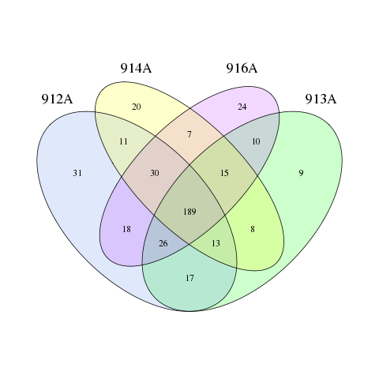
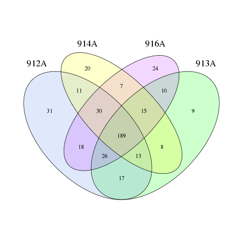

I Overview
1 Introduction of workflow
Once the DNA sample(s) was(were) received, a qulity test has been done first, then all the qualified DNA is used to construct a library(libraries). For PCR product, the jagged ends of DNA fragment would be converted into blunt ends by using T4 DNA polymerase, Klenow Fragment and T4 Polynucleotide Kinase. Then add an 'A' base to each 3' end to make it easier to add adapters. After all that, fragments too short would be removed by Ampure beads. For genomics DNA, we use fusion primer with dual index and adapters for PCR, fragments too short would be removed by Ampure beads too. In both cases, only the qualified library can be used for sequencing. The bioinformatics analysis will be carried on with sequencing data.
Figure 1 Workflow
2 Bioinformatics analysis workflow
The raw data were filtered to eliminate the adapter pollution and low quality to obtain clean reads, then paired-end reads with overlap were merged to tags. And tags were clustered to OTU at 97% sequence similarity. Taxonomic ranks were assigned to OTU representative sequence using Ribosomal Database Project (RDP) Nave Bayesian Classifier v.2.2. At last, alpha diversity, beta diversity and the different species screening were analyzed based on OTU and taxonomic ranks.
Figure 2 Bioinformatics analysis pipeline of Amplicon Sequencing
II Methods and results
1 Data statistics
In order to obtain more accurate and reliable results in subsequent bioinformatics analysis[1], the raw data will be pre-processed to get clean data by in-house procedure as following:
1) Truncation of sequence reads not having an average quality of 20 over a 30 bp sliding window based on the phred algorithm, and trimmed reads having less than 75% of their original length, as well as its paired read, will be removed;
2) Removal of reads contaminated by adapter(default parameter: 15 bases overlapped by reads and adapter with maximal 3 bases mismatch allowed);
3) Removal of reads with ambiguous basa(N base), and its paired reads;
4) Removal of reads with low complexity(default: reads with 10 consecutive same base).
For pooling library with barcode samples mixed, the clean reads were assigned to corresponding samples by allowing 0 base mismatch to barcode sequences with in-house scripts.
Paired-end reads were generated with Illumina HiSeq/MiSeq platform, then the reads with sequencing adapters, N base, poly base, low quality etc were filtered out with default parameters(detailed in Method 1), and the data processing results was listed in Table 1-1.
| Sample Name | Reads Length (bp) | Raw Data (Mbp) | Adapter (%) | N base (%) | Ploy base (%) | Low Quality (%) | Clean Data (Mbp) | Data Utilization Ratio (%) | Raw Reads | Clean Reads | Read Utilization Ratio (%) |
|---|---|---|---|---|---|---|---|---|---|---|---|
| 912A | 250:250 | 35.69 | 0.000 | 0.164 | 0.011 | 6.542 | 30.19 | 84.60 | 71370*2 | 62657*2 | 87.79 |
| 913A | 250:250 | 41.30 | 0.000 | 0.167 | 0.013 | 12.343 | 30.27 | 73.30 | 82594*2 | 63161*2 | 76.47 |
| 914A | 250:250 | 35.47 | 0.001 | 0.173 | 0.092 | 5.188 | 30.84 | 86.94 | 70945*2 | 63930*2 | 90.11 |
| 916A | 250:250 | 39.67 | 0.000 | 0.166 | 0.010 | 10.718 | 30.34 | 76.49 | 79336*2 | 63190*2 | 79.65 |
| 9211A | 250:250 | 38.36 | 0.000 | 0.154 | 0.020 | 9.315 | 30.49 | 79.49 | 76717*2 | 63512*2 | 82.79 |
| 927A | 250:250 | 35.03 | 0.000 | 0.160 | 0.006 | 5.296 | 30.32 | 86.55 | 70063*2 | 62941*2 | 89.83 |
| 928A | 250:250 | 38.71 | 0.000 | 0.157 | 0.026 | 10.052 | 30.24 | 78.12 | 77424*2 | 63006*2 | 81.38 |
| 929A | 250:250 | 36.15 | 0.000 | 0.178 | 0.017 | 6.334 | 30.80 | 85.21 | 72291*2 | 63968*2 | 88.49 |
| 934A | 250:250 | 36.15 | 0.000 | 0.162 | 0.003 | 6.297 | 30.58 | 84.60 | 72293*2 | 63669*2 | 88.07 |
| 935A | 250:250 | 37.80 | 0.000 | 0.167 | 0.011 | 8.522 | 30.58 | 80.90 | 75597*2 | 63468*2 | 83.96 |
| 936A | 250:250 | 37.92 | 0.000 | 0.174 | 0.013 | 8.274 | 30.77 | 81.15 | 75837*2 | 64099*2 | 84.52 |
| 937A | 250:250 | 37.03 | 0.000 | 0.175 | 0.087 | 8.091 | 30.18 | 81.49 | 74068*2 | 62803*2 | 84.79 |
| 9410A | 250:250 | 38.56 | 0.000 | 0.158 | 0.013 | 8.964 | 30.86 | 80.02 | 77128*2 | 64211*2 | 83.25 |
| 9411A | 250:250 | 37.87 | 0.000 | 0.188 | 0.016 | 8.443 | 30.72 | 81.13 | 75733*2 | 63797*2 | 84.24 |
| 947A | 250:250 | 35.79 | 0.000 | 0.192 | 0.014 | 5.633 | 30.84 | 86.18 | 71575*2 | 63966*2 | 89.37 |
| 949A | 250:250 | 37.94 | 0.000 | 0.169 | 0.010 | 9.151 | 30.31 | 79.89 | 75876*2 | 63045*2 | 83.09 |
Results directory：BGI_results/Clean_Data/
2 Paired end reads are merged to tags
If the two paired-end reads overlapped, the consensus sequence was generated by FLASH[2](Fast Length Adjustment of Short reads, v1.2.11), and the detailed method is as follows:
1) Minimal overlapping length: 15 bp;
2) Mismatching ratio of overlapped region: <= 0.1.
Removal of paired end reads without overlaps.
The high quality paired-end reads were combined to tags based on overlaps, 1013418 tags were obtained in total with 63338 tags per sample on average, and the average length is 252 bp.
| Sample Name | Total Pairs Read Number | Connect Tag Number | Connect Ratio (%) | Average Length And SD | Tags Without Primer | Tag Utilization Ratio (%) | Average Length (bp) And SD |
|---|---|---|---|---|---|---|---|
| 912A | 62657 | 62560 | 99.85 | 252/0 | - | - | -/- |
| 913A | 63161 | 63048 | 99.82 | 252/0 | - | - | -/- |
| 914A | 63930 | 63774 | 99.76 | 252/1 | - | - | -/- |
| 916A | 63190 | 63085 | 99.83 | 252/1 | - | - | -/- |
| 9211A | 63512 | 63391 | 99.81 | 252/1 | - | - | -/- |
| 927A | 62941 | 62807 | 99.79 | 252/0 | - | - | -/- |
| 928A | 63006 | 62898 | 99.83 | 252/0 | - | - | -/- |
| 929A | 63968 | 63823 | 99.77 | 252/0 | - | - | -/- |
| 934A | 63669 | 63533 | 99.79 | 252/1 | - | - | -/- |
| 935A | 63468 | 63330 | 99.78 | 252/1 | - | - | -/- |
| 936A | 64099 | 63971 | 99.80 | 252/1 | - | - | -/- |
| 937A | 62803 | 62684 | 99.81 | 252/0 | - | - | -/- |
| 9410A | 64211 | 64069 | 99.78 | 252/0 | - | - | -/- |
| 9411A | 63797 | 63648 | 99.77 | 252/0 | - | - | -/- |
| 947A | 63966 | 63887 | 99.88 | 252/0 | - | - | -/- |
| 949A | 63045 | 62910 | 99.79 | 252/1 | - | - | -/- |
Result directory: BGI_results/Connect_Tags/
3 Analysis of community patterns
The tags were clustered to OTU(Operational Taxonomic Unit) by scripts of software USEARCH(v7.0.1090)[3], detailed as follows:
1) The tags were clustered into OTU with a 97% threshold by using UPARSE, and the OTU unique representative sequences were obtained;
2) Chimeras were filtered out by using UCHIME(v4.2.40);
The 16S rDNA and ITS sequences were screened for chimeras by mapping to gold database(v20110519）, UNITE(v20140703) separately, de novo chimera detection was done for 18S rDNA sequences;
3) All tags were mapped to each OTU representative sequences using USEARCH GLOBAL, then the tags number of each OTU in each sample will be summarized to OTU abundance table.
OTU representative sequences were taxonomically classified using Ribosomal Database Project (RDP) Classifier v.2.2 trained on the database Greengene_2013_5_99, using 0.6 confidence values as cutoff.
Databases used for species annotation:
16S rDNA is used for bacterial and archaea community: Greengene(default): V201305[8] ; RDP: Release11_5,20160930
18S rDNA is used for fungal community: Silva(default): Version_132,20180410
ITS is also used for fungal community: UNITE(default): Version_7_2,20171201
OTUs were Filtered as follow:
1) Unassigned OTUs were removed;
2) OTUs not assigned to the target specices were removed. For example, the OTUs assigned to archeae would be removed if the project is about 16S rDNA for bacterial community study.
The filtered OTUs were used to downstream processing。
3.1 OTU cluster and abundance
3.1.1 OTU Statistics
Filtered tags are clustered into OTU (Operational Taxonomic Units) at 97% similarity and detailed information is summarized in Table 3-1, OTU number per sample primarily represents the degree of sample diversity.
| Sample Name | Tag number | OTU number |
|---|---|---|
| 912A | 52183 | 335 |
| 913A | 53563 | 287 |
| 914A | 60497 | 293 |
| 916A | 53480 | 319 |
| 9211A | 48718 | 425 |
| 927A | 55071 | 236 |
| 928A | 49157 | 423 |
| 929A | 51804 | 308 |
| 934A | 54896 | 247 |
| 935A | 54194 | 348 |
| 936A | 53185 | 295 |
| 937A | 60469 | 338 |
| 9410A | 49704 | 420 |
| 9411A | 51012 | 397 |
| 947A | 51637 | 416 |
| 949A | 50791 | 417 |
3.1.1 OTU venn chart
Venn diagram could visually display the number of common/unique OTUs in multi-samples/groups. The core microbiomes of different environments could be obtained if combined with the OTU represent species.
Based on the OTU abundance, OTU of each group was listed, Venn diagram was drawn by VennDiagram of software R(v3.1.1), then the common and specific OTU ID were summarized.
Different color represents different samples or groups, The interior of each circle symbolically represents the number of observed OTUs in the certain sample/group. The overlapping area or intersection would represent the set of OTU commonly present in the counterpart samples/groups. Likewise, the single-layer zone represents the number of OTUs uniquely found in the certain sample/group. Venn diagram is suited to 2-5 samples or groups.
 



3.1.3 Core-Pan OTU Analysis
Display the common and the uniq OTU of samples or groups.

3.1.4 OTU PCA analysis
In order to display the differences of OTU composition in different samples, Principal component analysis(PCA) was used to construct 2-D graph to summarize factors mainly responsible for this difference, similarity is high if two samples are closely located.
Based on the OTU abundance information, the relative abundance of each OTU in each sample will be calculated, and the PCA of OTU was done with the relative abundance value. The software used in this step was package 'ade4' of software R(v3.1.1).


3.1.5 Species Accumulation analysis
Species Accumulation (SA) analysis. SA plots showing the increase in OTUs detected with the addition of each sample. Each bar represents 100 random draws (without replacement) of samples from the sample pool. The picture shows the curve obtained using all of the OTU data.

3.1.6 PLS-DA analysis
PLS-DA is performed in order to sharpen the separation between groups of observations, by hopefully rotating PCA components such that a maximum separation among classes is obtained, and to understand which variables carry the class separating information. Figure 3 is the graph of partial least squares discrimination analysis.
The software used in this step was package 'mixOmics' of software R.

3.1.7 OTU rank curve
OTU rank abundance curve provides a means for visually representing species richness and species evenness. Species richness can be viewed as the number of different species on the chart (X-axis)i.e., how many species were ranked. Species evenness is derived from the slope of the line that fits the graph. A steep gradient indicates low evenness as the high ranking species have much higher abundances than the low ranking species. A shallow gradient indicates high evenness as the abundances of different species are similar.
OTU were ranked by the relative abundance value as x-axis, and the OTU relative abundance was as y-axis, then the rank curve were drawn by software R(v3.1.1).
3.2 Species composition and abundance
3.2.1 Species Annotation
The tags number of each taxonomic rank(Phylum, Class, Order, Family, Genus, Species) or OTU in different samples were summarized in a profiling table or histogram, and the histogram was drawn with the software R(v3.1.1).
Figure 3-4-* are the taxonomics composition distribution histograms of each sample were shown at Phylum, Order, Class, Family, Genus, Species level separately. The ratio of each species in certain sample is directly displayed. At Phylum, all species were used to draw the histogram. The species of which abundance is less than 0.5% in all samples were classified into 'others' in other ranks.


3.2.2 Specie heat map
A heat map is a graphical representation of data where the individual values contained in a matrix are represented as colors. Here species clustering based on the abundance of each species was shown by heat map, longitudinal clustering indicates the similarity of all species among different samples, and the horizontal clustering indicates the similarity of certain species among different samples, the closer the distance is and the shorter the branch length is, the more similar the species composition is between the samples. At Phylum, all species were used to draw the heat map. The species of which abundance is less than 0.5% in all samples were classified into 'others' in other ranks. Figure 3-5-* shows the species clustering heat map at different taxonomic ranks.
Species heat map analysis was done based on the relative abundance of each species in each sample. To minimize the differences degree of the relative abundance value, the values were all log transformed. If the relative abundance of certain species is 0, the half of the minimum abundance value will substituted for it. Heatmaps were generated using the package 'gplots' of software R(v3.1.1) and the distance algorithm is 'euclidean', the clustering method is 'complete'.


3.2.3 Species phylogenetic analysis
A phylogenetic tree is a branching diagram showing the inferred evolutionary relationships among various biological species or other entities(their phylogeny) based upon similarities and differences in their physical or genetic characteristics. The evolution distance between species is closer if the branch length is shorter. Besides the species composition and abundance analysis above, phylogenetic tree could clarify the species evolution relationship further.
The representative sequences were aligned against the Silva core set(Silva_108_core_aligned_seqs) using PyNAST by 'align_seqs.py'. A representative OTU phylogenetic tree was constructed using the QIIME(v1.80) built-in scripts including the fasttree method for tree construction. The tags with highest abundance of each Genus was chosen as the corresponding Genus representative sequences, and Genus level phylogenetic tree was obtained by the same way of OTU phylogenetic tree. The phylogeny tree was imaged by software R(v3.1.1) at last.

Results directory: BGI_results/OTU_Cluster_Taxonomy/
4 Diversity analysis
4.1 Diversity analysis with single sample
Alpha diversity is applied for analyzing complexity of species[11] diversity for a sample through several indices, including observed species, chao1, ace, shannon and simpson. The complexity of sample is proportional with the first four values, while with a negative correlation with simpson value.
Observed species value, chao1 value and ACE value can reflect the species richness of community, and the rarefaction curve based on the three values could also be used to evaluate if produced data is enough to cover all species in the community. When the curve tends to be smooth, it suggests the produced data is enough. Otherwise, when the curve continues to climb with increasing sequencing effort, it shows a high complexity in samples, and there still be species uncovered by the sequencing data.
Shannon value and simpson value can reflect the species diversity of the community, affected by both species richness and species evenness, that is the two values also consider the abundance of each species. With the same species richness, the greater the species evenness, the greater the community diversity.
The indices are calculated by Mothur(v1.31.2), and the corresponding rarefaction curve are drawn by software R(v3.1.1). The calculation formula of each indice can refer to http://www.mothur.org/wiki/Calculators and the method of drawing rarefaction curve is as follows,
1) Calculating OTU numbers based on extracted tags (in multiples of 500);
2) Rarefraction curve was drawn using the indices calculated with extracted tags.
If the samples belong to different groups, and the sample number in per group is more than 3, differential analysis among groups could be done using the alpha diversity indices. And Wilcoxon Rank-Sum Test is used for two groups comparation, while Kruskal-Wallis Test is used for multi-groups comparation. And then plotbox of alpha diversity is drawn, the analysis above is done by software R(v3.1.1).
| Sample Name | sobs | chao | ace | shannon | simpson | coverage |
|---|---|---|---|---|---|---|
| 912A | 335.000000 | 364.684211 | 372.677508 | 3.259440 | 0.098875 | 0.999080 |
| 913A | 287.000000 | 316.117647 | 327.291730 | 3.158834 | 0.162669 | 0.999160 |
| 914A | 293.000000 | 313.217391 | 308.384932 | 2.877425 | 0.149743 | 0.999488 |
| 916A | 319.000000 | 376.187500 | 378.656425 | 3.399941 | 0.092913 | 0.998859 |
| 9211A | 425.000000 | 519.916667 | 472.096434 | 4.119788 | 0.036103 | 0.998604 |
| 927A | 236.000000 | 278.241379 | 276.353907 | 2.440790 | 0.180162 | 0.999092 |
| 928A | 423.000000 | 472.875000 | 459.786025 | 4.022022 | 0.056820 | 0.998840 |
| 929A | 308.000000 | 336.200000 | 344.801382 | 3.302989 | 0.081577 | 0.999073 |
| 934A | 247.000000 | 303.000000 | 288.989319 | 2.568126 | 0.255957 | 0.999107 |
| 935A | 348.000000 | 391.050000 | 375.646313 | 3.990505 | 0.044374 | 0.999225 |
| 936A | 295.000000 | 346.250000 | 322.524893 | 3.495927 | 0.081577 | 0.999229 |
| 937A | 338.000000 | 374.384615 | 366.596818 | 3.786554 | 0.048950 | 0.999272 |
| 9410A | 420.000000 | 445.066667 | 447.892855 | 4.034867 | 0.040048 | 0.999034 |
| 9411A | 397.000000 | 454.777778 | 445.728036 | 4.024415 | 0.038701 | 0.998726 |
| 947A | 416.000000 | 458.558140 | 453.254086 | 3.740860 | 0.052292 | 0.998819 |
| 949A | 417.000000 | 453.263158 | 453.549088 | 3.978332 | 0.066518 | 0.998957 |
Figure 4-1 shows the different curve based on observed species value, chao1 value and ACE value, shannon value, simpson value.


The mean and standard deviation(SD) were calculated based on the alpha diversity values of all samples. If p value is less than 0.05, there is significant difference in alpha diversity among the groups. Table 4-2-* lists the comparison results and only shows the value of two groups, calculated value of other groups is detailed in the results file.
| #Alpha | mean(A) | SD(A) | mean(B) | SD(B) | ... | p-vaule | |||||||||||||||||||||||||||||||||||||||||||||||||||||||||||||||||||||||||||||||||||||||||||||||||||||||||||||||||||||||||||||||||||||||||||||||||||||||||||||||||||||||||||||||||||||||
|---|---|---|---|---|---|---|---|---|---|---|---|---|---|---|---|---|---|---|---|---|---|---|---|---|---|---|---|---|---|---|---|---|---|---|---|---|---|---|---|---|---|---|---|---|---|---|---|---|---|---|---|---|---|---|---|---|---|---|---|---|---|---|---|---|---|---|---|---|---|---|---|---|---|---|---|---|---|---|---|---|---|---|---|---|---|---|---|---|---|---|---|---|---|---|---|---|---|---|---|---|---|---|---|---|---|---|---|---|---|---|---|---|---|---|---|---|---|---|---|---|---|---|---|---|---|---|---|---|---|---|---|---|---|---|---|---|---|---|---|---|---|---|---|---|---|---|---|---|---|---|---|---|---|---|---|---|---|---|---|---|---|---|---|---|---|---|---|---|---|---|---|---|---|---|---|---|---|---|---|---|---|---|---|---|---|---|---|---|---|
| sobs | 308.50000 | 22.47221 | 412.50000 | 10.47219 | ... | 0.15148 | |||||||||||||||||||||||||||||||||||||||||||||||||||||||||||||||||||||||||||||||||||||||||||||||||||||||||||||||||||||||||||||||||||||||||||||||||||||||||||||||||||||||||||||||||||||||
| chao | 342.55169 | 32.56008 | 452.91644 | 5.68719 | ... | 0.17451 | |||||||||||||||||||||||||||||||||||||||||||||||||||||||||||||||||||||||||||||||||||||||||||||||||||||||||||||||||||||||||||||||||||||||||||||||||||||||||||||||||||||||||||||||||||||||
| ace | 346.75265 | 34.35481 | 450.10602 | 3.90853 | ... | 0.15148 | |||||||||||||||||||||||||||||||||||||||||||||||||||||||||||||||||||||||||||||||||||||||||||||||||||||||||||||||||||||||||||||||||||||||||||||||||||||||||||||||||||||||||||||||||||||||
| shannon | 3.17391 | 0.22101 | 3.94462 | 0.13804 | ... | 0.16807 | |||||||||||||||||||||||||||||||||||||||||||||||||||||||||||||||||||||||||||||||||||||||||||||||||||||||||||||||||||||||||||||||||||||||||||||||||||||||||||||||||||||||||||||||||||||||
| simpson | 0.12605 | 0.03530 | 0.04939 | 0.01295 | ... | 0.14849 | |||||||||||||||||||||||||||||||||||||||||||||||||||||||||||||||||||||||||||||||||||||||||||||||||||||||||||||||||||||||||||||||||||||||||||||||||||||||||||||||||||||||||||||||||||||||
| coverage | 0.99915 | 0.00026 | 0.99888 | 0.00014 | ... | 0.03142 | |||||||||||||||||||||||||||||||||||||||||||||||||||||||||||||||||||||||||||||||||||||||||||||||||||||||||||||||||||||||||||||||||||||||||||||||||||||||||||||||||||||||||||||||||||||||


| Line | File Description |
|---|---|
| 1 | @Reads ID |
| 2 | Sequence |
| 3 | + Reads ID （Reads ID could be omitted） |
| 4 | Base quality |
2 FASTA format
Fasta format (also called Pearson format) which based on the format of text is used to record the sequences of DNA and protein. In the format, the sequence of DNA and protein are coded by single characters, and the name is allowed to be added as annotation at the beginning of each sequence. The first line of the sequence file is start by the symbol of '>' or ';' which is followed by annotation. The sequence is started from the second line, and only allowed characters can be used for coding. For DNA sequences, capitals or lowercases can be used for coding; for protein sequence, only capitals can be used. For example:
>Sample1_Tag1
TGAGGAATATTGGTCAATGGACGCAAGTCTGAACCAGCCATGCCGCGTGCAGGATGACGGTCCTATGGATTGTAAACTGCTTTTGTACGAGAAGAAAC
ACTCCTACGTGTAGGAGCTTGACGGTATCGTAAGAATAAGGATCGGCTAACTCC
The tags and OTU sequences are all FASTA format.
3 Illustration of OTU files
OTU_taxonomy.xls example:
| #OTUId | Abundance | Taxonomy |
|---|---|---|
| Otu1 | 1200 | Bacteria;Proteobacteria;Gammaproteobacteria;Pseudomonadales;Moraxellaceae;Acinetobacter;Acinetobacter_lwoffii |
| Otu2 | 900 | Bacteria;Firmicutes;Clostridia;Thermoanaerobacterales;Thermodesulfobiaceae;Coprothermobacter |
| Otu3 | 4100 | Bacteria;Proteobacteria;Gammaproteobacteria;Pseudomonadales;Pseudomonadaceae;Pseudomonas |
OTU_table_for_biom.txt example:
| #OTU ID | Sample1 | Sample2 | Sample3 | taxonomy |
|---|---|---|---|---|
| Otu1 | 100 | 300 | 800 | Bacteria; Proteobacteria; Gammaproteobacteria; Pseudomonadales; Moraxellaceae; Acinetobacter; Acinetobacter_lwoffii |
| Otu2 | 500 | 200 | 200 | Bacteria; Firmicutes; Clostridia; Thermoanaerobacterales; Thermodesulfobiaceae; Coprothermobacter |
| Otu3 | 1000 | 1000 | 2100 | Bacteria; Proteobacteria; Gammaproteobacteria; Pseudomonadales; Pseudomonadaceae; Pseudomonas |
OTU_stat_detail.xls example:
Num samples: 3
Num total OTUs: 121
Num Singletons: 0
Num Non-singletons: 121
Num total sequences: 6200
Sample all OTU summary:
Min: 64
Max: 83
Mean: 73
Standard deviation: 7
Sample detail:
Sample name Tag number OTU number
Sample1 1200 64
Sample2 900 72
Sample3 4100 79
Num samples: the number of samples; Num total OTUs: total OTU number; Num Singletons: Number of OTU with only 1 tag; Num Non-singletons: Number of OTU with 2 or more tags; Num total sequences: total number of tags.
Sample all OTU summary: The summarized information of OTU, including minimum number of OTU, the maximum number of OTU, the average number of OTU, the standard deviation.
Sample detail: the number of each sample’s OTU. The first column is Sample ID, the second column is the total OTU number in each sample, the third column is the number of OTU without singletons, the fourth column is the ratio of OTU with singleton in all OTU.
*sharedOTU.venn.xls example:
| group | shareOTU_num/uniuqeOTU_num | OTU_ID |
|---|---|---|
| Sample1-vs-Sample2 | 80 | Otu1,Otu10,Otu100,Otu101,Otu102,Otu103... |
| Sample1-vs-Sample3 | 85 | Otu1,Otu10,Otu100,Otu101,Otu102,Otu103... |
| Sample1 | 5 | Otu113,Otu116,Otu118,Otu60,Otu98 |
OTU_PCA.coordinate.xls example:
| Axis1 | Axis2 | |
|---|---|---|
| Sample1 | 1.535 | -3.381 |
| Sample2 | 0.5531 | -3.0168 |
| Sample3 | 3.2705 | 3.4669 |
Genus.phylogeny.tree: This file is in Newick format which is the usual format of phylogeny tree and could be identified by several software such as FigTree,Treebest, PHYLIP etc.
4 Alpha diversity analysis files
Alpha_diversity.detail.xls example:
| label | group | sobs | chao | chao_lci | chao_hci | ace | ace_lci | ace_hci | … |
|---|---|---|---|---|---|---|---|---|---|
| 0.03 | Sample1 | 156.000000 | 521.500000 | 335.876875 | 898.676067 | 378.948085 | 283.807259 | 544.912564 | … |
| 0.03 | Sample2 | 151.000000 | 297.176471 | 226.692999 | 433.292428 | 294.071360 | 231.482437 | 405.333926 | … |
*.Alpha.test.reslut.xls example:
| #Alpha | mean(Group1) | SD(Group1) | mean(Group2) | SD(Group2) | ... | p-vaule |
|---|---|---|---|---|---|---|
| sobs | 191.00000 | 43.24350 | 682.50000 | 166.91016 | ... | 0.00075 |
| chao | 292.44654 | 16.15483 | 898.39669 | 154.11534 | ... | 0.00063 |
| ace | 382.62500 | 177.89841 | 854.80273 | 154.54333 | ... | 0.00114 |
| shannon | 2.33207 | 4.34743 | 3.04424 | 4.27114 | ... | 0.00066 |
| simpson | 0.18282 | 0.03691 | 0.15808 | 0.04751 | ... | 0.00167 |
5 Beta diversity analysis files
*Beta_diversity.xls example:
| Sample1 | Sample2 | Sample3 | Sample4 | |
|---|---|---|---|---|
| Sample1 | 0.0 | 0.529648285613 | 0.690040650407 | 0.570607988689 |
| Sample2 | 0.529648285613 | 0.0 | 0.597119123365 | 0.449893955461 |
| Sample3 | 0.690040650407 | 0.597119123365 | 0.0 | 0.708907741251 |
| Sample4 | 0.570607988689 | 0.449893955461 | 0.708907741251 | 0.0 |
6 Differences analysis files
*differentially_abundant.xls example:
| Phylum | mean(Group1) | variance(Group1) | std.err(Group1) | mean(Group2) | variance(Group2) | std.err(Group2) | p-vlaue | FDR |
|---|---|---|---|---|---|---|---|---|
| Actinobacteria | 0.0490001 | 4.8e-05 | 0.039710 | 0.073479 | 0.000135 | 0.0601112 | 0.653410 | 0.682357 |
| Proteobacteria | 0.014310 | 2e-06 | 0.008470 | 0.018354 | 1e-06 | 0.0069 | 0.685421 | 0.676623 |